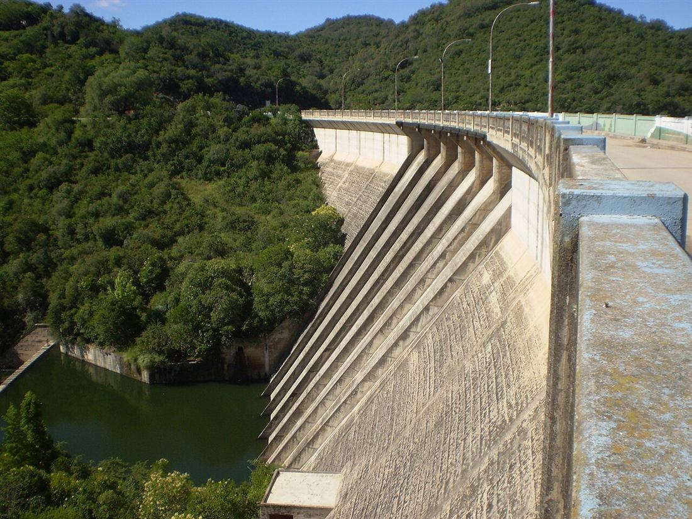

Cuánto colchón de agua conviene dejar bajo el vertedero según la lluvia caída y pronosticada, sin comprometer el agua potable de ~50.000 personas. Comparado contra la tormenta del 15 de febrero de 2015.
Embalse de 3,3 hm³ sobre los arroyos Colanchanga y Los Hornillos. Abastece a Río Ceballos, Unquillo y Mendiolaza.
| Fecha | Cota | Respecto del vertedero | Fuente |
|---|---|---|---|
| 2/11 | 32,95 m | −1,05 m | APRHI |
| 12–13/11 | 32,37 m | −1,63 m | Cooperativa / Diques de Córdoba |
| 14/11 | 32,60 m | −1,40 m | Sensor APRHI (informe municipal) |
Entre el 2 y el 12 de noviembre bajó 58 cm sin lluvia, unos 16.000 m³ por día entre toma de la planta y evaporación. Es más de lo que supone el modelo (unos 11.000 m³/día), así que la autonomía real puede ser menor que la calculada. La tormenta del 13 al 14 lo subió 23 cm. Por esa subida se estima que en la cuenca cayeron unos 25 mm. Es una estimación: no hay datos publicados de los pluviómetros de la cuenca.
| Dom 15 | Sol, máxima de 30–31 °C, sin lluvia |
| Lun 16 | Alerta amarilla por tormentas en toda la provincia, tarde y noche: 30 a 70 mm, que pueden superarse en forma puntual |
| Mar 17 | Mejora, sin lluvia |
| Mié 18 – Jue 19 | Vuelven lluvias y chaparrones, sin montos anunciados |
| Vie 20 | Mejora |
En el registro de abajo, el pronóstico se cargó con 70 mm, el límite superior del aviso, como criterio preventivo.
El colchón actual es de 0,40 hm³. Con suelo todavía seco absorbe hasta ~75 mm. Si el suelo quedó húmedo por la tormenta del viernes, absorbe solo ~45 mm. Según el modelo, con 70 mm en 6 h:
El dique está 3 m por encima del nivel guía de temporada (−4,5 m). En un día no se puede recuperar ese colchón: con la válvula a 5 m³/s, en 24 h baja unos 1,5 m. Conviene que Defensa Civil tenga listos el corte de vados y el aviso a los barrios de alta amenaza para el lunes a la noche, y que se consulte a APRHI por una descarga preventiva.
Con ninguno. El 15/02/2015 cayeron entre 250 y 300 mm en unas 12 horas sobre una cuenca de 36,9 km² que ya venía saturada (el embalse estaba lleno y vertiendo el día 14). Eso produce entre 7,6 y 8,9 hm³ de escurrimiento. El embalse entero, vacío, guarda 3,3 hm³. Aun en el nivel más bajo registrado en la sequía de 2023 (−13 m) habría quedado lugar para menos de un tercio de esa agua.
Lo que sí logra un colchón es demorar el inicio del vertido y absorber por completo tormentas de 50 a 100 mm, que son las frecuentes. En el 15F, con el dique a −5 m, el vertedero habría empezado a volcar unas 5 h más tarde: es el tiempo para evacuar las zonas de alta amenaza.
El colchón solo sirve si se recupera entre tormentas. Las decisiones de válvula corresponden a la APRHI. Esta regla es una propuesta a validar con ellos y con Defensa Civil.
Ecos de radar de las últimas dos horas cada 10 minutos, sobre el dique, el río y las zonas de amenaza. Se actualiza solo cada 5 minutos. Las tormentas en Sierras Chicas suelen entrar desde el oeste y el sur: si los ecos amarillos o rojos se acercan a la cuenca del dique, la crecida puede llegar en menos de una hora.
Radar: RainViewer (compuesto de radares públicos, resolución limitada). Para más detalle: radar de Córdoba del SMN · Windy. Mapa base © colaboradores de OpenStreetMap.
Zonas de amenaza, cursos de agua, escorrentías, cruces, puntos de encuentro y escuelas del mapa oficial publicado en el Protocolo El Niño, sobre el relieve real de la cuenca. Arrastrá para girar, usá la rueda o pellizcá para acercar, y tocá un punto o una zona para ver qué es.
Los vados se marcan con un punto blanco al centro: son los primeros que se cortan con lluvia. El lago es aproximado: se dibujó a partir del relieve, que a esta escala no muestra bien sus brazos angostos.
Fuentes: Mapa de amenaza de inundación (Municipalidad de Río Ceballos, Protocolo El Niño). Relieve: AWS Terrain Tiles (SRTM y otros, ~30 m), remuestreado a ~40 m. Es un mapa de consulta: ante una emergencia valen las indicaciones de Defensa Civil.
Cargá los milímetros diarios de cada estación (APRHI/Defensa Civil, OHMC, cooperativa o pluviómetros vecinales). El promedio de los últimos 5 días define si el suelo está seco, normal o saturado (condición AMC del método SCS). La fila "pronóstico" se toma del SMN para las próximas 48 h. Datos iniciales al 15/11/2026: los 25 mm del 13/11 son una estimación por la subida del dique, no una lectura de pluviómetro. Las celdas vacías cuentan como sin dato. Lo que cargues queda guardado en este navegador.
Hidrograma de entrada por método SCS (número de curva y hidrograma unitario triangular, Tc ≈ 1 h), tránsito por el embalse con la curva cota-volumen y el vertedero libre de 60 m. Descuenta la toma de la planta potabilizadora.
La capacidad real de la válvula de fondo no está publicada. En enero de 2026 APRHI la abrió con "un caudal mínimo". Confirmar el valor antes de usar el escenario de descarga previa.
Cada metro que se baja suma lugar para lluvia, pero resta días de abastecimiento si deja de llover. La autonomía supone la toma de la planta y evaporación de verano, sin aportes del río, hasta el nivel mínimo operativo.
Se calculan solos en la franja de estado, comparando la lluvia pronosticada con la que el embalse puede absorber al nivel actual.
| Presa | hormigón, 47,8 m sobre fundación, coronamiento 254 m (1974–76) |
| Volumen al labio del vertedero | 3,30 hm³ (cota 34 m local) |
| Volumen a embalse máximo | 4,0 hm³ (cota 36 m, +2 m) |
| Espejo de agua | 30 ha al vertedero · 35 ha al máximo |
| Vertedero | libre, 60 m, 6 vanos, 360 m³/s |
| Cuenca de aporte | 36,88 km² (Colanchanga 19,2 + Los Hornillos 16,6) |
| Lluvia media anual | 750 mm |
| Planta potabilizadora | ≈400 m³/h · Río Ceballos, Unquillo, Mendiolaza |
| Población servida | ≈50.000 (Río Ceballos 26.700, censo 2022) |
| Curva cota-volumen (ajustada) | V = 3,3·(h/34)3,09 hm³ |
La curva cota-volumen se ajustó a los tres datos publicados (3,3 hm³ y 30 ha al vertedero, 4,0 hm³ a +2 m) y los reproduce dentro del 2 %. Con el vertedero de 60 m, 360 m³/s corresponde a 2,0 m de carga, que coincide con la cota de embalse máximo.